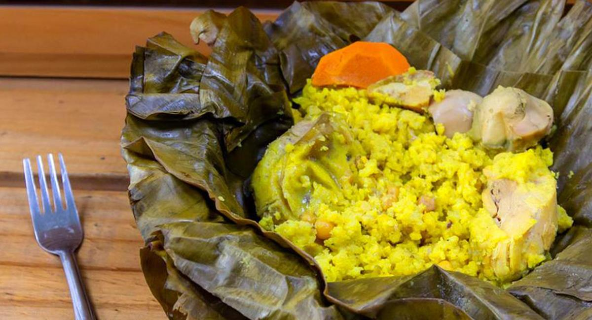

Tamales

History
The tamal is one of the most prominent and traditional dishes in Colombian cuisine, with its main ingredients being corn, rice, and the bijao or corn husk leaves used to wrap it.
Although its origin is debated among various countries, some stories highlight that the tamal comes from pre-Hispanic cultures; others suggest it was made by African slaves and
some indigenous people who collected the leftover Christmas food from the Spanish table and mixed it with corn dough.
Historians and anthropologists do not agree on which country created this process of mestizaje that captivates the cuisine, though they do record its existence since ancient times
in countries such as Mexico, Guatemala, Peru, and Venezuela.
Ingredients
- ½ kilogram of hulled corn.
- 1 chicken, deboned and cut into small cubes.
- ½ kilogram of pork ribs, cut into small cubes.
- 1 bundle of green onions, chopped.
- ½ kilogram of bacon with skin, cut into small cubes.
- 1 red bell pepper, chopped.
- 3 hard-boiled eggs, sliced.
- ½ kilogram of cooked chickpeas.
- 1 carrot, sliced.
- 2 potatoes, sliced.
- 5 garlic cloves, crushed.
- Annatto prepared in pork lard.
- Salt, pepper, and cumin to taste.
- Water.
- 20 banana leaves, washed.
- String for tying.
Preparation
Dough
- Soak the corn for 3 days (changing the water each day).
- Drain the corn and grind it very finely.
- Cook the pork ribs and bacon skin in salted water for 20 minutes.
- Strain the broth carefully and set it aside to prepare the dough.
- Mix the ground corn with the rib and bacon broth.
- Strain the corn mixture to form the dough and let it rest for an hour.
- Add annatto prepared in pork lard to the dough and mix until it has a uniform color.
- Knead until you achieve a smooth and thick texture
- Divide the dough into 20 small balls, two for preparing each tamale.
Stew
- In a separate container, prepare the stew by sautéing the onion, garlic, and bell pepper in the bacon fat.
- Season the chicken, pork ribs, and bacon with the stew, salt, pepper, and cumin to taste.
- Let this mixture marinate for an hour or more to enhance the flavors.
Tamales
- To prepare each Colombian tamale, place two banana leaves in a cross shape and grease them with a bit of annatto prepared in lard to prevent the filling from sticking.
- Spread one ball of dough to create a thin base for the filling.
- Add a portion of the stew (chicken, bacon, and pork ribs), chickpeas, slices of egg, carrot, and potato.
- Cover each tamale with another ball of dough, spread out, and fold the leaves to form a square or rectangle.
- Seal all sides of the Colombian tamale tightly and tie with string to prevent water from entering during cooking.
- Repeat the process until all the tamales are assembled.
- In a large, deep pot, place a base layer of leaves and add enough water to boil and cover the tamales.
- When the water is boiling, carefully add the tamales and cover them with an additional layer of leaves on top to retain steam.
- Cook for 2 ½ hours over medium heat, checking the water level and adding more if necessary.
- Remove the tamales from the water and let them rest for a few minutes.
- Serve them while still hot to enjoy.